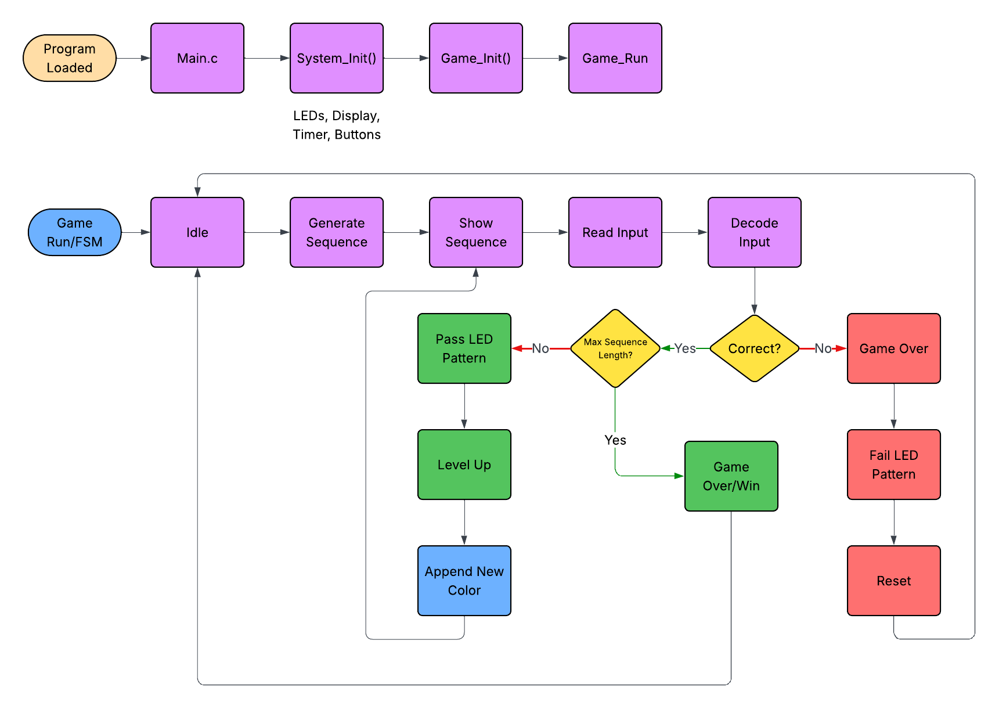

Introduction
Our project implements a three-color memory game inspired by Simon Says on the FRDM-KL46Z board. The system generates a sequence of colors and displays them using LEDs. The user must then repeat the sequence using the onboard buttons. If the input is correct, the game advances to the next round and the sequence gets longer.
This project combines several ideas from class, including GPIO, timing control, modular embedded software design, and state-based game flow. Our goal was to build a complete, interactive embedded system that was both reliable and easy to test.
We successfully implemented the core gameplay, including sequence generation, LED playback, button decoding, and correctness checking. We also learned how important timing, debouncing, and modular testing are in embedded systems.
System Overview
The game is structured around a simple state machine. At startup, the board initializes all modules. It then generates and displays a color sequence, waits for user input, compares the input against the stored sequence, and either advances to the next round or ends the game.
Game Flow
- Startup: Initialize LEDs, buttons, timer, display, and random generator.
- Sequence Display: Show the current sequence using LEDs.
- User Input: Read button presses and map them to colors.
- Validation: Compare user input to the stored sequence.
- Next Round / Game Over: Advance if correct, otherwise end the game.
Module / System Architecture
Click any module below to learn about its role in the system.
↑ click any block to open description
Game Flow / FSM

Play the Game
Try it yourself! Watch the color sequence light up across the LED strip, then repeat it in order using the buttons below. The sequence grows by one color each round — reach Level 10 to win and reset.
Video
The video below demonstrates the gameplay and briefly explains the implementation.
System Description
The project is organized into separate modules so that each file handles one main responsibility. This made development and debugging easier, especially during integration.
- main.c initializes the system and starts the main game loop.
- system_init.c / system_init.h initializes all modules, including LEDs, display, timer, and buttons.
- game.c / game.h manage the game state machine and sequence checking logic.
- buttons.c / buttons.h handle button input, debouncing, and one-time press events.
- leds.c / leds.h control LED output for sequence playback and success/failure feedback.
- timer.c / timer.h provide reusable timing functions and timeout helpers.
- rndm.c / rndm.h generate pseudo-random color values for the sequence.
- display.c / display.h used to show current level/round number on the LCD display.
Input Handling
The user interacts with the game using SW1 and SW3. Because mechanical buttons can bounce, the button module uses software debouncing to avoid false or repeated inputs. It tracks raw input, stable debounced state, and one-time press events separately. This made the game logic much more reliable.
Color Mapping
Since the game uses three colors but the board only provides two buttons, button combinations are used to represent the three possible inputs. Single-button presses represent two colors, and pressing both buttons together represents the third color.
Sequence Generation and Playback
The random generator creates values corresponding to valid game colors. These values are stored in an array representing the current round's sequence. The LED module then plays the sequence back to the user with timing delays so that each color is clearly visible.
Game Logic
The game logic compares user input against the stored sequence in real time. If the user enters the wrong color, the game immediately transitions to a failure state. If the full sequence is entered correctly, the level increases and a new round begins.
Timing
Timing functions are used both for sequence playback and for user interaction. Delays help control LED visibility, and timeout helpers are used to support features such as limiting how long the user can wait before entering input.
Testing
We tested each module independently before integrating the full system.
- Buttons: Verified debouncing, stable states, and one-time press event detection using LED feedback.
- Timer: Tested delay functions visually and verified timeout logic using software counter checks.
- LEDs: Confirmed correct color output and checked sequence playback timing.
- Random Generator: Verified that generated values stayed within the valid color range and varied across runs.
- Game Logic: Tested correct sequences, incorrect sequences, partial input, and repeated rounds.
- Display: Confirmed the LCD display increments a counter/number by 1.
During integration, we found that timing and input handling were the most important parts to debug. One issue we encountered was inconsistent button detection due to button bounce, which we addressed by refining the debounce logic. We also adjusted LED timing delays to make the sequence easier to follow.
In addition to module-level tests, we repeatedly played through the game to verify that progression, failure conditions, and user feedback all behaved as expected.
Resources
We used course materials, lecture slides, and reference code from previous labs. We also referred to the MKL46Z4 reference manual for GPIO configuration and timing behavior. We also used the given LCD Library & files.
No external codebases were used beyond course-provided resources.
Work Distribution
We divided the project by modules and followed a structured timeline so that development could happen in parallel while keeping integration manageable.
Development Timeline
- Initial setup: Itohan created the MCUXpresso project, repository, and file skeletons, while Saanvi created the website outline and README.
- Core modules:
- Buttons module implemented by Itohan; Saanvi created corresponding test file and test cases.
- LED module implemented by Saanvi; Itohan created corresponding test file and test cases.
- Timer module implemented by Itohan; Saanvi created corresponding test file and test cases.
- Random generator implemented by Saanvi; Itohan created corresponding test file and test cases.
- Game logic implemented by Itohan; Saanvi created corresponding test file and test cases.
- Display logic implemented by Itohan; Itohan created corresponding test file and test cases.
- Polish and integration: Both team members worked on refining timing, speed, LED visibility, input decoding, sequence comparison, level progression, score tracking, and game over behavior.
- Finalization: We completed full system integration and testing, then finished the website and video documentation.
Throughout the project, we continuously tested individual components before combining them into the full system. Most challenges were related to timing, state transitions, and reliable input handling, which we resolved through iterative debugging.
Both team members also contributed to debugging, integration, and final system validation.
AI Usage
We have not used any AI models for this project.